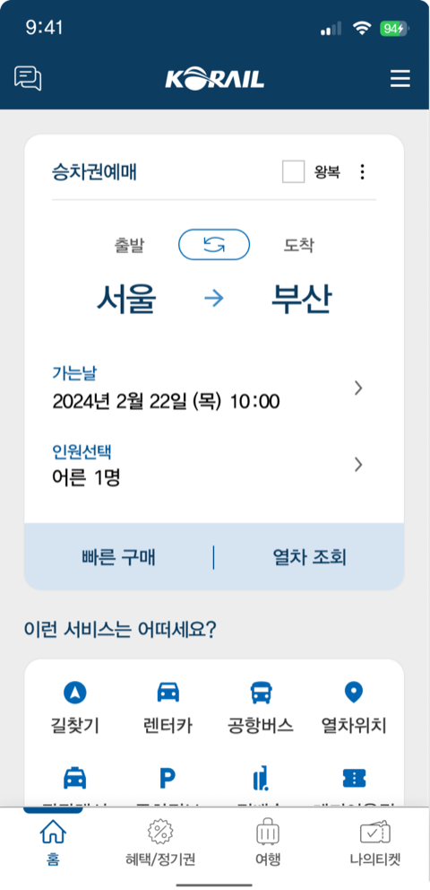
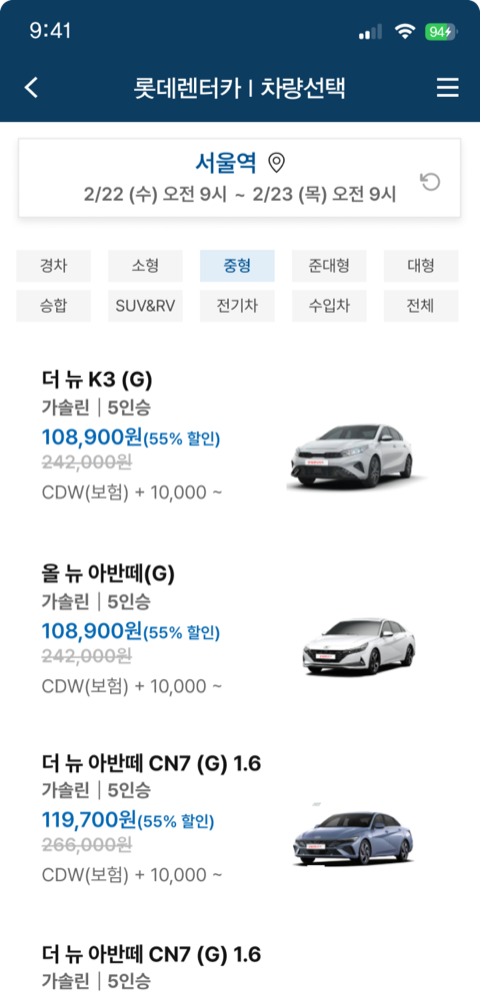
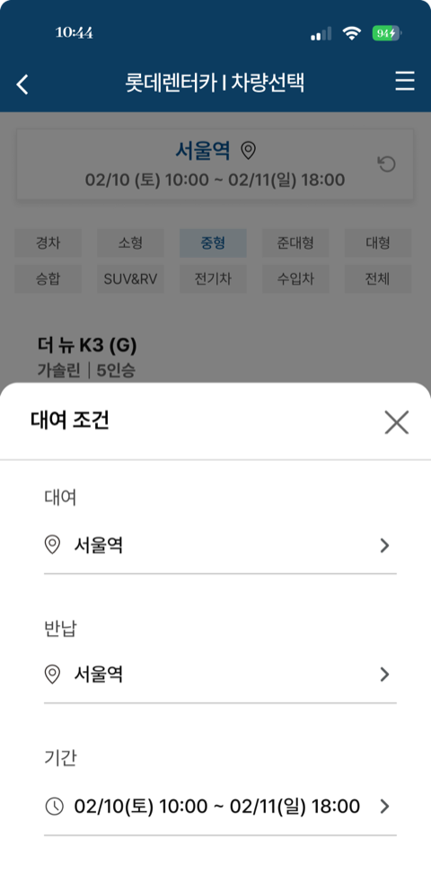
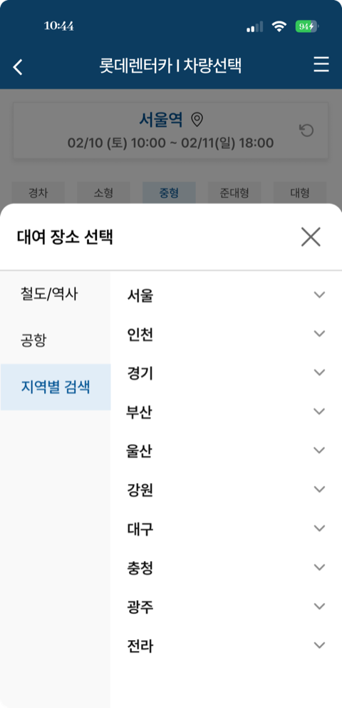
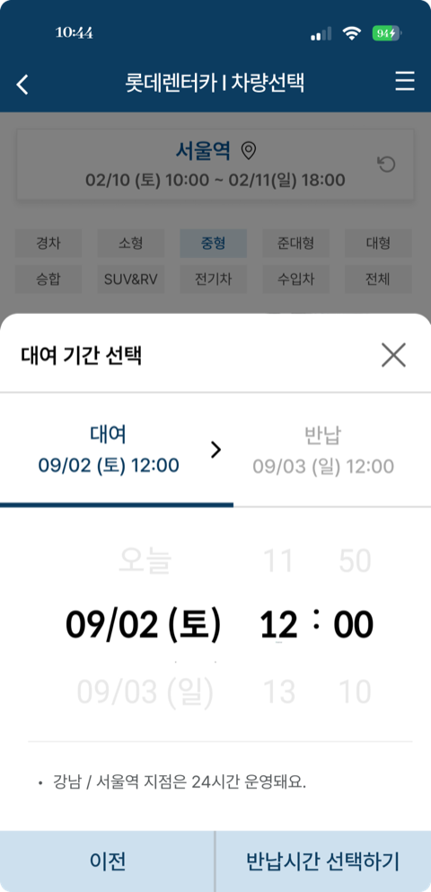
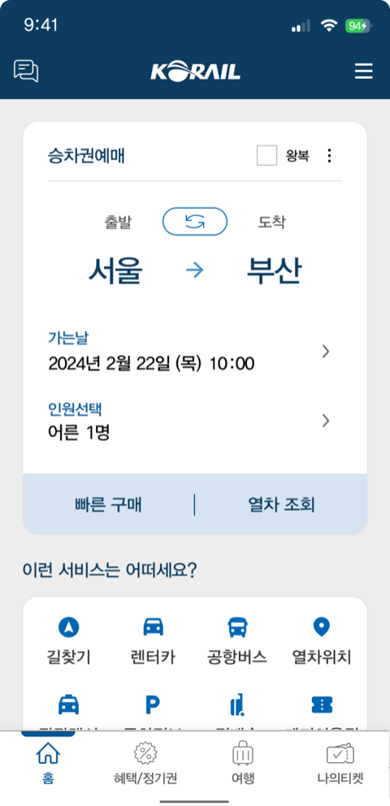
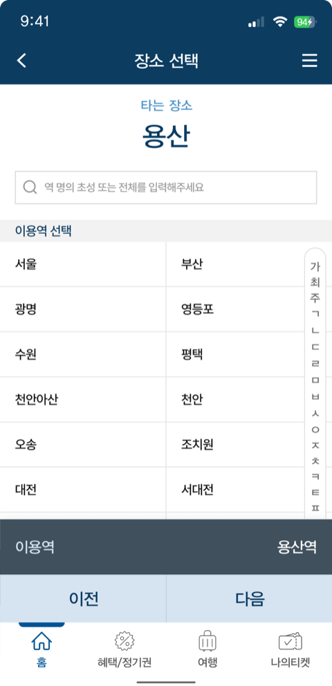
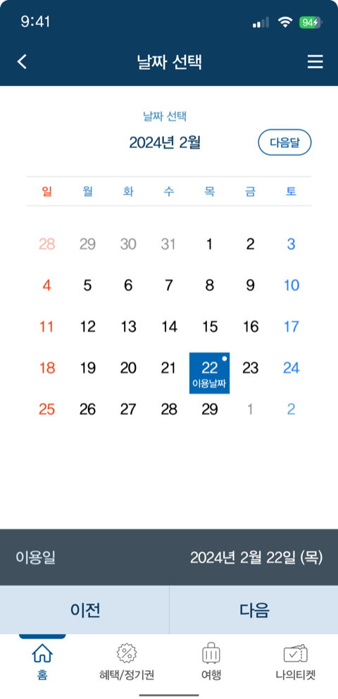

제안
한 화면, 하나의 결정
해법은 화면을 더하는 게 아니라 결정을 쪼개는 것이었습니다. 한 화면에 몰려 있던 입력을 장소 → 날짜 → 차량 순서로 나눠, 화면마다 하나씩만 고르게 했어요.
조건을 먼저 정하면 그게 차량을 고르는 기준이 되니, 사용자가 순서를 고민할 일이 사라집니다. 같은 기능을, 자연스럽게 따라가는 흐름으로 다시 세운 제안이었습니다.
AS-IS · Everything at once
- 홈
- 렌터카 진입
- 조건 설정
- 장소 선택
- 일정 설정
- 조건 재설정
TO-BE · A simpler way
- 홈
- 장소 선택
- 날짜 선택
- 차량 선택
AS-IS · 실제 화면옆으로 넘겨보세요 →





TO-BE · 한 화면, 하나의 결정옆으로 넘겨보세요 →




추측이 아니라 세 갈래 근거가 같은 곳을 가리켰기에, 무엇을 어떻게 고칠지가 분명했습니다. 여기서 얻은 '한 화면엔 하나의 결정'은 이후 다른 화면을 설계할 때도 제 기준이 됐어요.